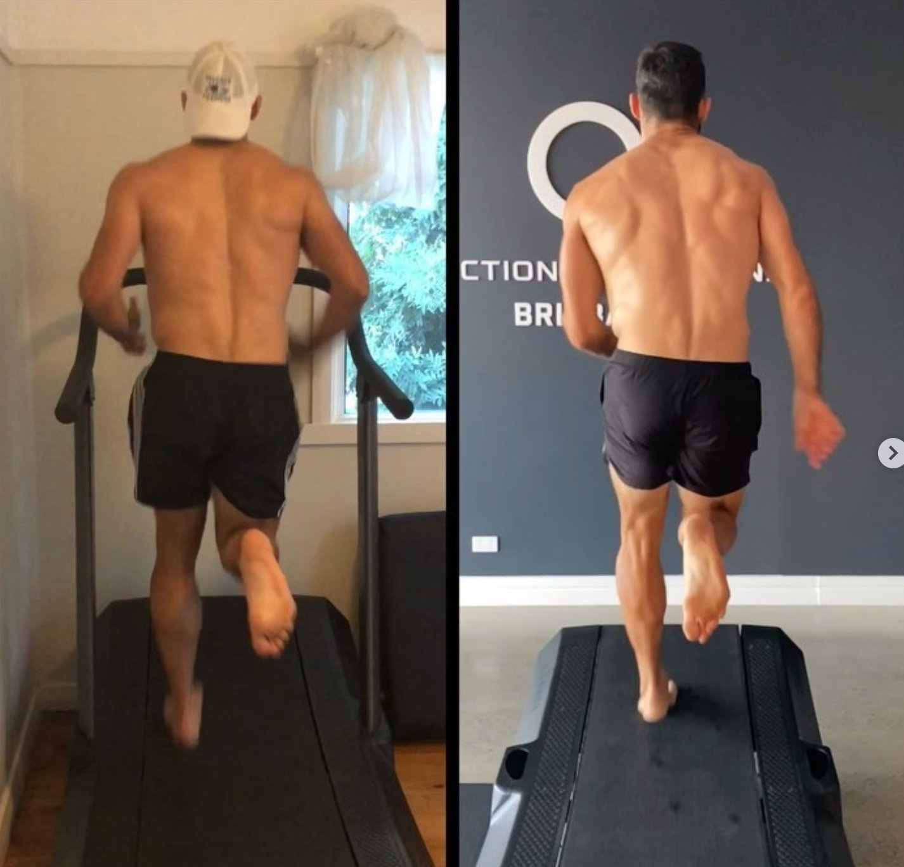
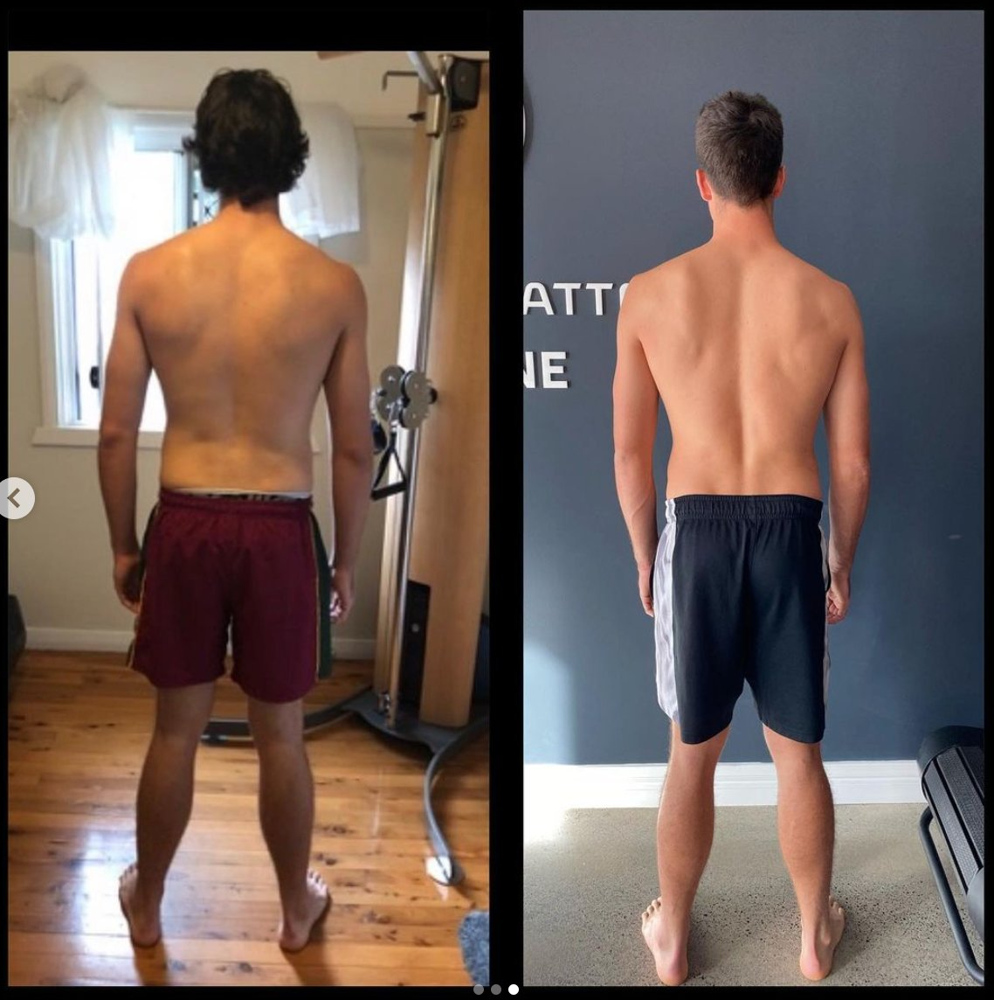
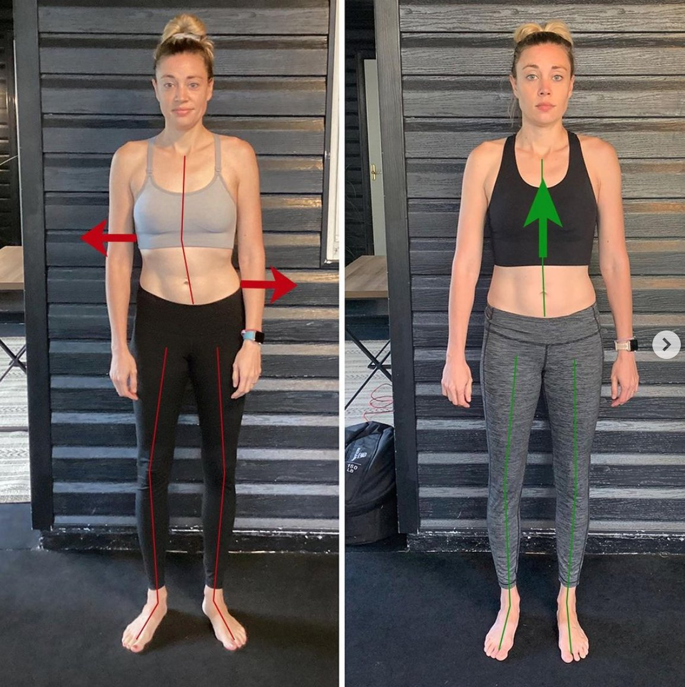

The Definition of Fascia is as Follows:
"The fascia is any tissue that contains features capable of responding to mechanical stimuli, everything from your tongue tongue to your blood & bones (see a full list at the bottom of this page). The fascial continuum is the result of the evolution of the perfect synergy among different tissues, liquids, and solids, capable of supporting, dividing, penetrating, feeding, and connecting all the districts of the body… The continuum constantly transmits and receives mechano-metabolic information that can influence the shape and function of the entire body."
- Foundation of Osteopathic Research and Clinical Endorsement (Bordoni et al., 2021)
WHAT IMPACT DOES FASCIA HAVE IN YOUR BODY?
And What Happens When It’s Dysfunctional?
Fascia plays an integral role in:
-
Lymph flow & drainage
-
Muscular force production & tension distribution
-
Structural adaption to stress
-
Repair of every system and cell in the body
-
The Immune System
-
Emotional Stability
-
Chronic pain
-
Chronic inflammation
-
Chronic health conditions such as osteoporosis
-
Body dysmorphia
-
Chronic fatigue
-
Digestive issues
FASCIA & YOUR MECHANICS/MOVEMENT
The fascial continuum allows the proper distribution of tension information produced by different tissues covered or supported by the fascia so that the entire body system can interact in real-time (Bordoni et al., 2021).
Normal movement of the body is allowed because of the presence of the fascial tissues and their inseparable interconnection, which allow the sliding of the muscular structure, the sliding of nerves and vessels between contractile fields and joints, and the ability of all organs to slide and move with each other as influenced by the position of the body. One of the fundamental characteristics of the fascia is the ability to adapt to mechanical stress, remodeling the cellular/tissue structure and changing to suit the environment (Bordoni et al., 2021).

HOW DOES DYSFUNCTIONAL FASCIA CAUSE CHRONIC PAIN?
Connective tissue, fascia, can directly send pain signals because it has pain receptors capable of translating a mechanical stimulus into painful information, and if there are dysfunctional mechanical stimuli, receptors which receive stimuli from within the body can become pain receptors. The pain receptors themselves synthesise substances that can alter the surrounding tissue and form an inflammatory environment. The epineurium and perineurium are part of the fascial system innervated by nervi nervorum (small nerves), which, if in contact with pro-inflammatory molecules, can cause sensations of pain and create a vicious circle. This is a likely cause of chronic pain.

All the fascial layers need hyaluronic acid to slip one on the other. Decreased quantity compromises the sliding of connective tissues. There is much evidence that the change in the viscoelasticity (having a sticky consistency between liquid and solid and also being elastic) of the fascial system is an important cause of chronic pain. Hyaluronic acid would become adhesive and less lubricating, altering the lines of forces within the different fascial layers. This mechanism could be one of the causes of joint stiffness and pain in the morning.
A change to the bodies tension may be caused by the contractile capacity of fibroblasts (contributes to the formation of connective tissue), creating a level of tension in the fascia that is independent of neurological intervention. This contractile mechanism could cause an inflammatory environment with fibroblast hyperplasia (an increased amount of connective tissue forming cells), resulting in chronic inflammation and sensitisation of pain receptors. The inflammation that can be registered by fibroblasts will increase swelling outside of the cells which will cause an increase in tension and rigidity, with difficulty in sliding the fascia layers and the appearance of pain.
The sensitisation of pain receptors could be caused by the local reduced blood flow resulting from fascial tension, which prevents the proper functioning of the skeletal muscle and creates, for example, trigger points (Bordoni et al., 2021).
FASCIA, THE IMMUNE SYSTEM & CHRONIC PAIN
When the fascial continuum fails to flow properly, its different layers, one on top of the other from the most superficial layer up to the periosteum, an inflammatory environment, acute or chronic, is created; the inflammatory cells produced could stimulate the activation of bone resorption, leading over time to an osteoporosis situation.
Fibrosis or fibromatosis is the result of disorganisation of connective tissue with hyperplasia and hypertrophy of fibroblasts due to a chronic inflammatory environment, abnormal/dysfunctional mechanical stress, or immobility. It is essentially calcification of the fascia. When fibromatosis is registered as similar to scar tissue, for example, in Dupuytren pathology, the percentage of fibroblasts that change into myo-fibroblasts increases, with alteration of the tension that the fascial continuum senses. This creates a vicious circle of inflammation and activation of nociceptors (pain receptors) as connective tissue is much more sensitive to nociceptor (pain) activation than muscle tissue.
Many chronic conditions, such as heart failure, chronic obstructive pulmonary disease, fibromyalgia, diabetes, always show alterations in the fascial system. These changes facial changes greatly contribute to the chronic pain experienced during these conditions (Bordoni et al., 2021).
HOW DO YOU GET DYSFUNCTIONAL, DRY FASCIA TO BE HEALTHY AGAIN?
Functional Patterns techniques and protocols balance, rehydrate and put elasticity back into your fascia. Each and every movement has been carefully thought out to undo fascial dysfunctions and to create an environment where the adaptions that your body makes are beneficial to your over-all health, vitality and structure.
As seen in the research above, a chronic inflammatory environment, abnormal/dysfunctional mechanical stress, and immobility are key drivers of fascial dysfunction. The body adapts to whatever it is given and if you constantly feed the body dysfunctional movements, the body will maladapt and may cause you pain, fatigue and chronic disease.
What Does Functional Patterns Training Look Like?
What Does Functional Patterns Training Look Like?

WHAT IS FUNCTIONAL VS DYSFUNCTIONAL MOVEMENT & MECHANICAL STRESS?

To put it very simply, the body has evolved to move in a certain way. This is the hierarchy of movement that functional patterns is based upon: standing, walking, running and throwing. If these movements are performed correctly, fascia responds extremely well. The problem is that not many people know how to perform these foundational movements well. Functional patterns has broken down the gate cycle into its most basic components to encode them into peoples movements through precision and repetition.
To add to this, people have recently developed many popular ways of moving, exercising and gaining muscle that are highly dysfunctional. This correlates with the increase in chronic pain, fatigue and early-onset chronic disease. A good way to tell if a movement is dysfunctional or not is the ‘gate cycle test’. If movement does not directly make you run faster, it is likely dysfunctional. For example, back squatting 100kg will make your legs bigger, but those gains do not directly correlate to the track field.
Conversely, immobility was also listed as a key driver of fascial dysfunction. The issue is, once chronic pain and fatigue set in, people are far less likely to move. The solution is to give people postural exercises to begin with. These exercises directly relate to the gate cycle but are very gentle on the body. They are highly precise and can undo the initial dysfunction that lead to the immobility in the first place. From there, people go from being in chronic pain and exhausted, to exercising multiple times a week without any pain. You can take a look at some of our results pages to read case studies on individuals who have undertaken this journey.